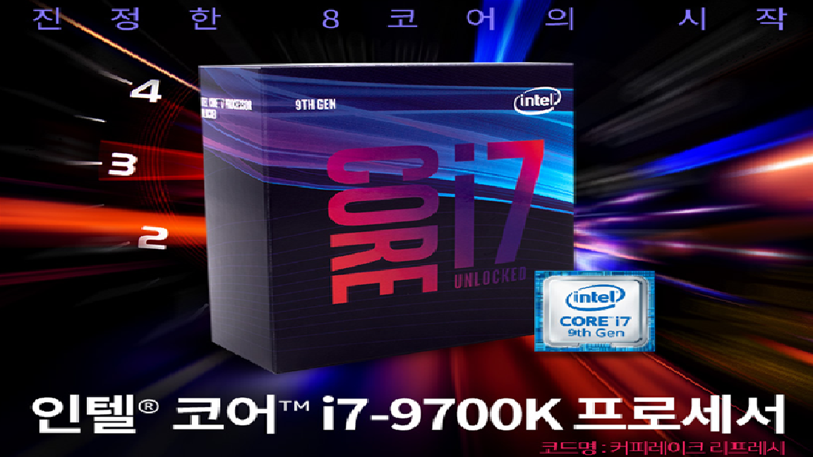
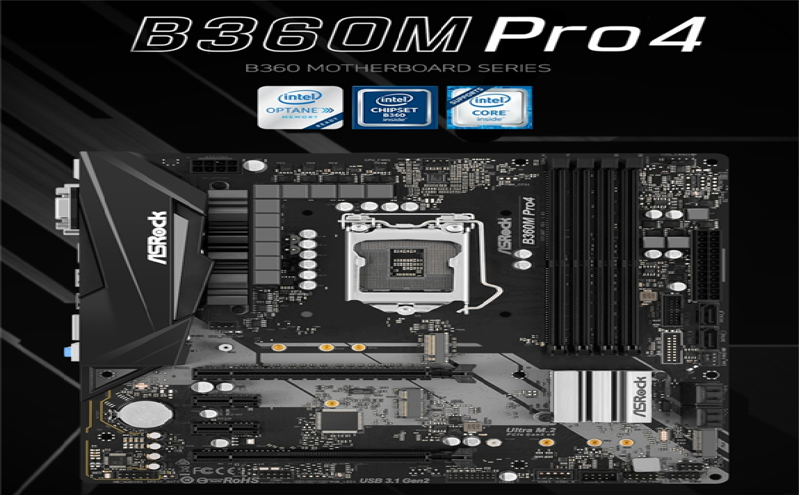
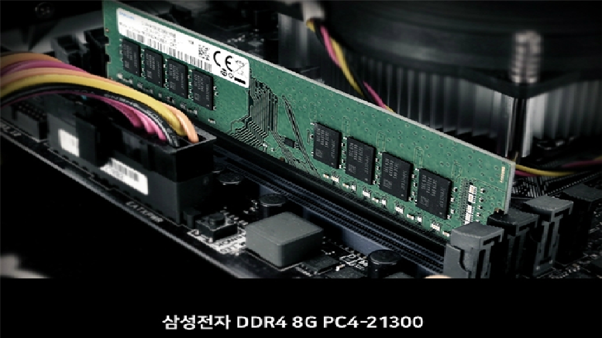
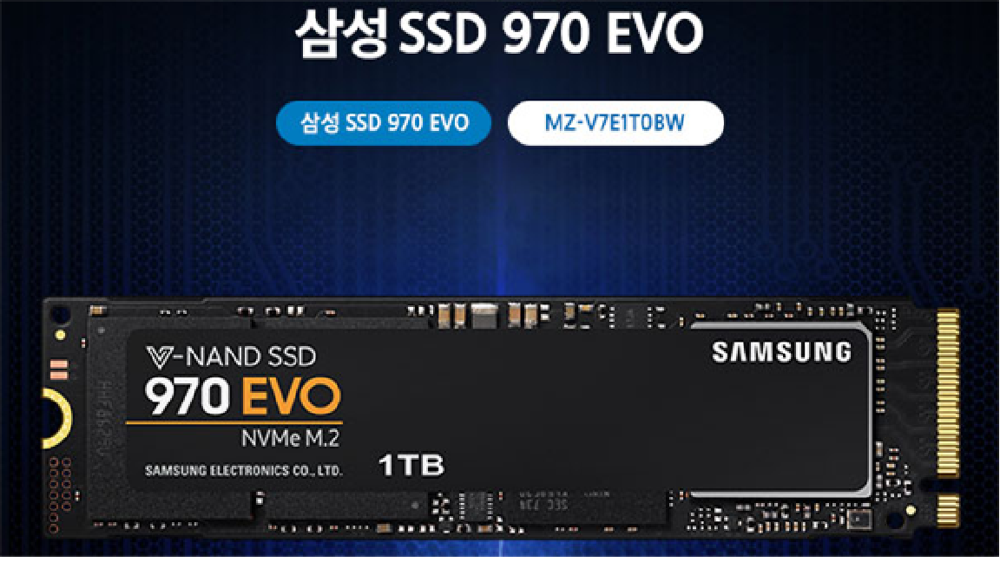
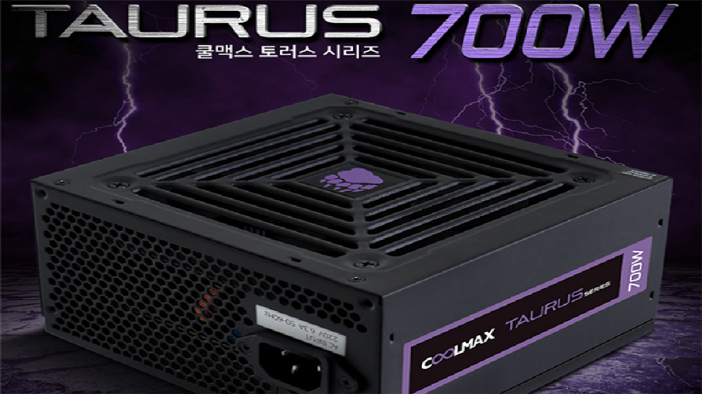
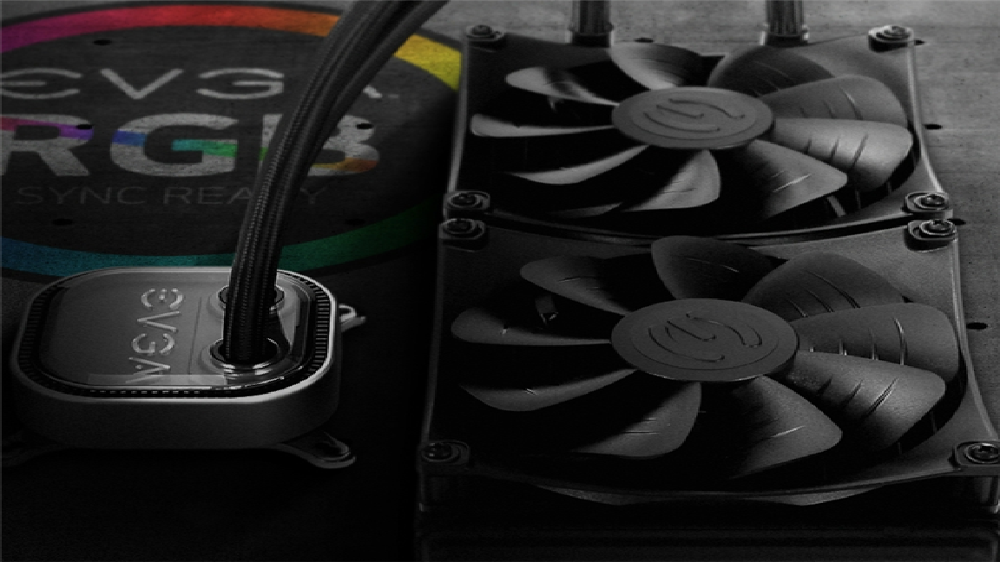

| 가상컴퓨터 |
| CPU |
 |
CPU는 컴퓨터의 두뇌에 해당하는 것으로서, 사용자로부터 입력 받은 명령어를 해석, 연산한 후 그 결과를 출력하는 역할을 합니다. 저는 높은 사양의 게임을 하기 위해 인텔 코어i7-9세대 9700K (커피레이크-R) (정품)를 선택하였습니다. |
| 메인 보드 |
 |
메인보드는 말 그대로 PC의 기반을 이루는 주기판을 뜻하며, PC의 모든 구성품을 장착하는 모체라고 하여 마더보드라고 부르기도 합니다. 저는 호환성 등을 고려해서 ASRock B360M PRO4 에즈윈을 선택했습니다. |
| 램 |
 |
램은 데이터를 자유롭게 쓰거나 지울 수 있지만, 전원이 꺼지면 내용이 모두 지워지는 ‘휘발성 메모리’이기 때문에 HDD처럼 반영구적으로 데이터를 보관할 수는 없습니다. 하지만 CPU의 데이터 처리 속도와 보조를 맞출 수 있을 만큼 빠릅니다. |
| SSD |
 |
SSD는 용도나 외관, 설치 방법 등은 HDD와 유사하지만 내부적으로 차이가 있는데, SSD는 HDD와 달리 자기디스크가 아닌 반도체를 이용해 데이터를 저장합니다. 이러한 특성 덕분에 SSD는 HDD보다 빠른 속도로 데이터의 읽기나 쓰기가 가능합니다. 저는 많은 저장공간을 쓰기위해 1TB짜리 삼성전자 970 EVO M.2 2280 (1TB)을 선택했습니다. |
| 그래픽 카드 |
 |
CPU, 램, 하드디스크드라이브 등은 자체적으로 화면을 출력할 수 있는 기능을 갖추고 있지 않기 때문에 생성된 데이터를 영상 신호로 바꾸어 모니터에 전달해주는 장치가 필요합니다. 때문에 그래픽카드가 등장한 것입니다. 저는 게임용 컴퓨터를 목적으로 했기 때문에 6GB짜리 MSI 지포스 RTX 2060 벤투스 OC D6 6GB를 선택하였습니다. |
| 파워 |
 |
파워는 부품에 전력을 공급하는 역할을 합니다.저는 위 부품들을 실행시키기 위해 700w짜리 COOLMAX TAURUS 700W 80Plus Bronze 230V Eu를 선택하였습니다. |
| 쿨러 |
 |
쿨러는 위 부품들의 열을 식히는 역할을 합니다.위 부품들의 발열이 워낙 심하기에 수랭식 쿨러인 EVGA CLC 280 Liquid를 선택하였습니다. |